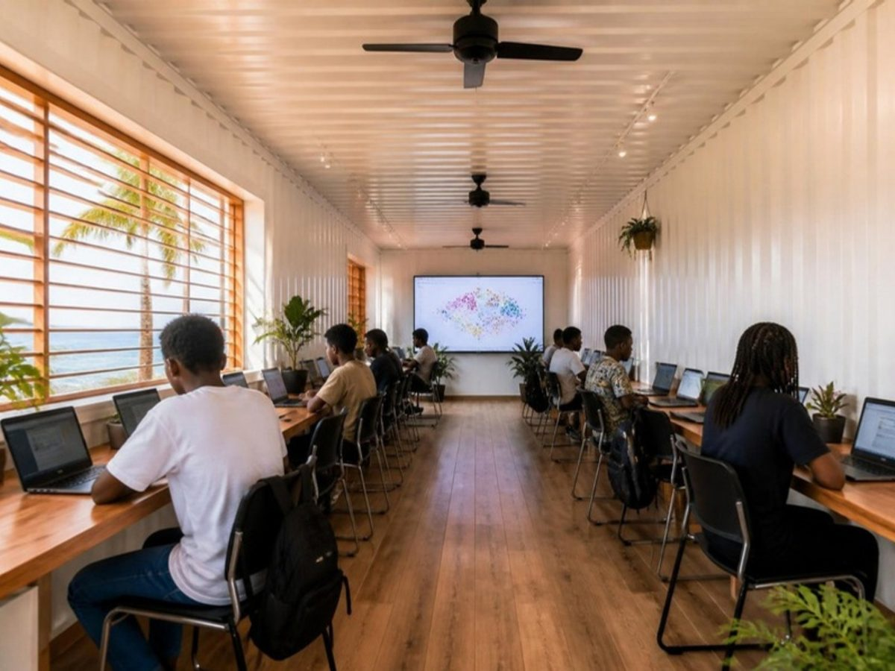
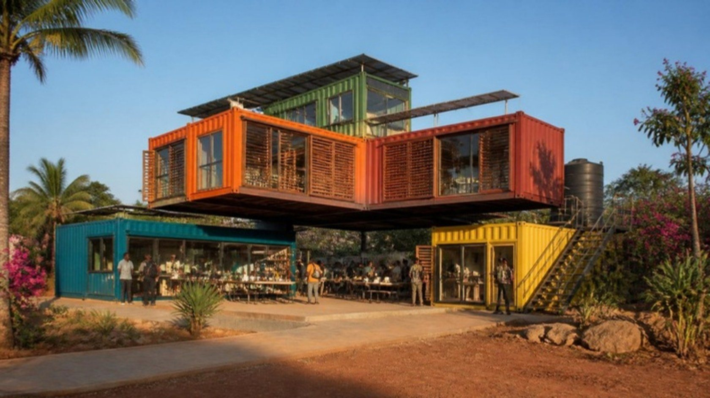
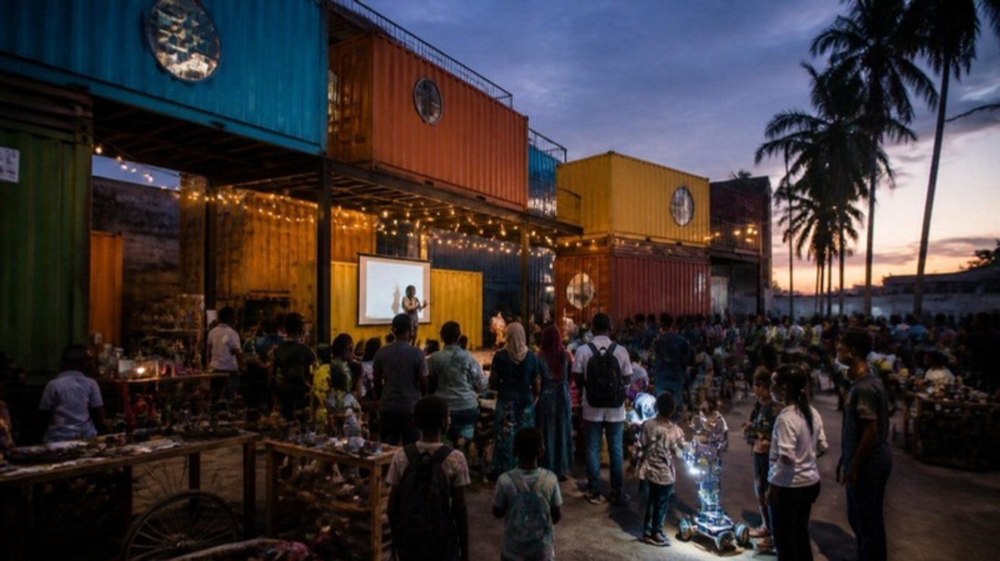
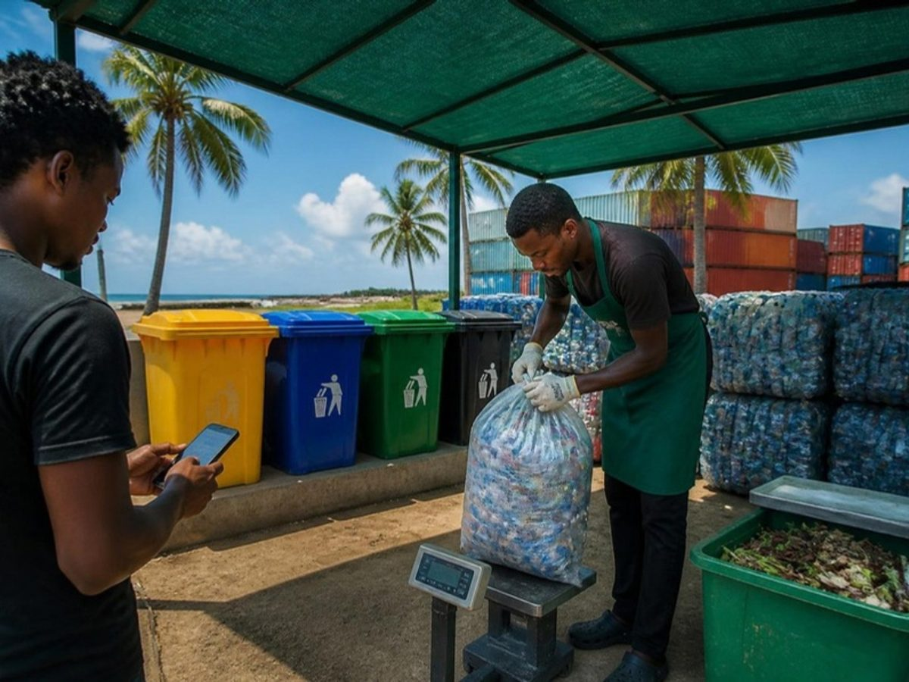
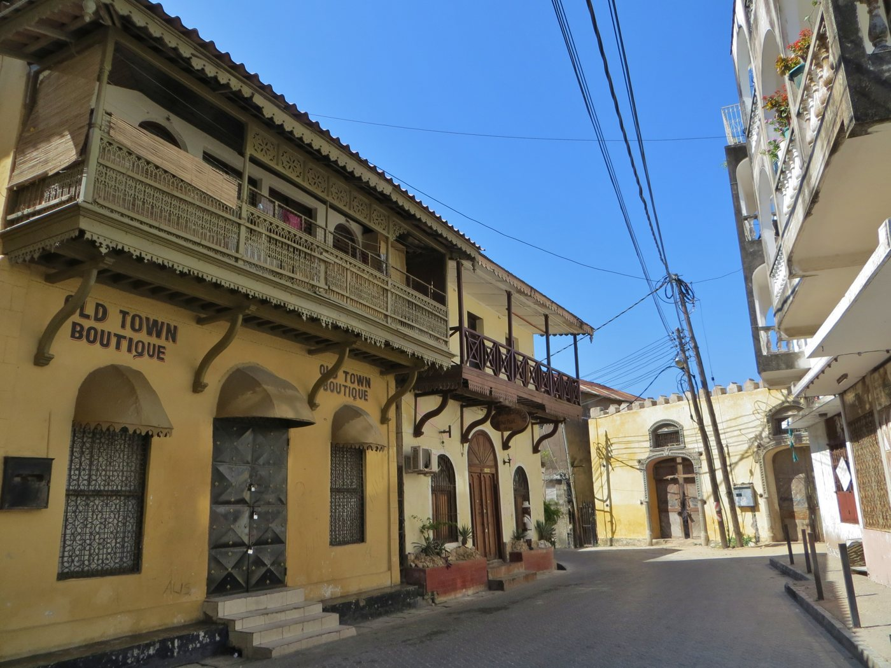

Digital & AI Learning Lab
- Inside
- Used by
- Earns from
Utange, Mombasa. Opening May 2027
A technology, climate and enterprise hub in Utange, Mombasa, where young people learn, prototype and launch.

AI concept visualisation for illustration. Final design follows the Phase 1 architectural and structural assessment.
Young people on the coast have ideas and drive, but the tools, space, mentors and markets they need sit in different places, or nowhere at all.
"The challenge is not simply unemployment or lack of technology. It is the absence of an integrated ecosystem that connects skills, technology, innovation, enterprise and community impact."
SAVIT concept note, 2026
people live in Kisauni, Mombasa's most populous sub-county, which the county itself says has "inadequate social amenities".
KNBS 2019 census, via Mombasa CIDP 2023-2027
of Mombasa's 1.2 million residents are aged 15 to 35: about 529,000 young people.
KNBS 2019 census, via Mombasa CIDP 2023-2027
young Kenyan women aged 15 to 24 is not in education, employment or training (24.6%, against 18.5% for all youth).
ILO modelled estimates, World Bank WDI, 2021
of the 1,000 tonnes of waste Mombasa generates each day is recycled. Only 600 tonnes are collected.
Mombasa CIDP 2023-2027
Most hubs cover one step. SAVIT puts every step under one roof, so nobody has to leave the building to take the next one.
Coding, AI, cyber, design and digital business in the Academy lab.
Turn a community problem into an idea worth testing.
Prototype in the Makerspace and Eco-Print Lab.
Mentored product and business development.
Pitch nights, market days and first customers.
Partners, finance and markets beyond the coast.
Jobs, income, cleaner neighbourhoods, measured.
A young person can walk in to learn coding, move into an AI or robotics programme, build an idea in the makerspace, get mentored, prototype it, enter an innovation challenge and leave with a business. That continuous pathway is what the Hub is for.
The building
The steel is left visible on purpose. It says what the Hub does: take what already exists and turn it into what a community needs next. Select a container to look inside.
Indicative massing for discussion. Container positions, cantilevers and the stair core will be fixed by the Phase 1 structural assessment.

A 20 kWp array with battery storage on a raised roof that shades the steel and feeds the tanks.
Two 10,000 litre tanks with first-flush filters for cleaning, toilets and planting.
Long axes run east to west, openings catch the Kaskazi and Kusi monsoon winds, and mineral-wool insulation keeps rooms cool.
Marine-grade ISO 12944 coatings, galvanised new steel and a funded annual inspection.
Ramps, a platform lift and an accessible WC, in line with the Persons with Disabilities Act 2025.
Energy, water and waste sub-metering plus a weather station feed the public impact dashboard.

The space under and inside the L stays open. It turns the Hub from a training centre into a platform the whole neighbourhood uses, and it is where partners meet the people they fund.
Annual technology, innovation and sustainability exhibition.
Young innovators meet policymakers, investors and partners.
Skills, mentorship and market access for women and girls.
Public demos linking climate literacy with working solutions.
Young makers and creatives sell what they build.
Robotics, AI and climate-tech projects shown in public.
AI concept visualisation for illustration.
The Hub is the Academy's flagship campus. Every course is practical and project-based, and each cohort feeds the next stage of the pipeline.
An indicative timetable showing how five zones and the commons stay in use from school hours to evenings. Utilisation is what makes the model pay.
| Time | Mon | Tue | Wed | Thu | Fri | Sat |
|---|---|---|---|---|---|---|
| 08:00 | School lab visitsJunior school, term time | Corporate trainingAI productivity | School lab visitsJunior school | Corporate trainingCyber awareness | School lab visitsSenior STEM | SAVIT Tech SaturdaysCoding and robotics, 7 to 17 |
| 10:00 | Youth bootcampSoftware and data | Youth bootcampSoftware and data | Youth bootcampCybersecurity | Youth bootcampCybersecurity | Green Innovators LabMakerspace | SAVIT Startup LabIncubation clinic |
| 14:00 | Digital marketingand freelancing | Eco-Print open studioMakers, members | AI for AfricaApplied AI | Eco-Print open studioMakers, members | Mentor office hoursStartups | Community Tech ClinicFree or subsidised |
| 16:00 | Robotics ClubAfter school | Coding ClubAfter school | Robotics ClubAfter school | Girls CodeAfter school | Waste Bridge DayMonthly, commons | Community marketCommons |
| 18:00 | Evening courseProfessionals | Women in TechMentorship circle | Evening courseProfessionals | Women in BusinessDigital business | Pitch night or eventVenue hire |
Every learner starts from a real problem in their community. The funnel narrows on purpose: fewer, stronger ventures leave the building with customers, mentors and partners.
Year 3 volumes from the concept review's capacity model: 80% utilisation of five containers and the commons. Indicative.

Mombasa's own development plan says its digital waste-collection platform "could not be implemented due to lack of technical personnel in ICT". Waste Bridge is built for exactly that gap, and the Hub trains the people to run it.
Since November 2024, every producer and importer in Kenya must prove what happens to its packaging, reporting collected and recycled volumes to NEMA and to counties each year. Most of Mombasa's plastic is recovered by informal collectors who produce no data. Waste Bridge is designed to log, verify and connect that supply to buyers, and the Eco-Print Lab turns part of it into products and income.
Sources: Mombasa CIDP 2023-2027; Sustainable Waste Management (EPR) Regulations 2024; SEI plastics value-chain study, 2022.
The Hub earns its place by joining seven things that usually live apart. That integration is the product.
| Capability | SAVIT Hub | Computer or cyber centre | Co-working space | Typical tech hub | Makerspace or fablab |
|---|---|---|---|---|---|
| Technologysoftware, AI, robotics, cyber | |||||
| Educationstructured Academy cohorts, age 7 up | |||||
| Climateliteracy, green tech, living building | |||||
| Circular economyWaste Bridge, recycling, upcycling | |||||
| Entrepreneurshipincubation, mentors, market access | |||||
| Communityopen commons, markets, events | |||||
| ProductionEco-Print, fabrication, media studio |
Technology services and digital transformation.
Future-ready learning for every age.
The physical home that connects it all.
Prototyping and small-batch production.
Circular-economy and climate solutions.
Businesses and jobs.
Government, private sector, universities, development partners.
A replicable model beyond Mombasa.

Mombasa CIDP 2023-2027Commits to ward ICT hubs with free Wi-Fi, a business innovation and incubation hub, 10 incubated startups and 100 ICT internships a year. SAVIT can deliver these as a county partner.
Digital Superhighway and JitumeA national target of one digital hub in each of 1,450 wards, with about 290 operating by May 2026.
Competency-Based Education49% of Kenya's first Senior School cohort, about 512,000 learners, entered the STEM pathway in 2026. Most schools lack the labs to match.
Kenya AI Strategy 2025-2030Talent development and inclusion are named enablers, which fits a public AI lab.
Extended Producer Responsibility, 2024Producers now need verifiable collection and recycling data, every year.
Utange sits on Mombasa's north mainland in Kisauni, home to 291,930 people and to Mwakirunge, the county's main dumpsite. Most hub activity is on Mombasa Island. Our desk review found no public makerspace with digital fabrication anywhere on the Coast.
Mombasa's anchor youth tech and creative hub, with 4,000+ members mentored by 2023. SAVIT adds making, fabrication and a north-mainland site.
Girls' and young women's STEM, reaching 6,000+ since 2016. A natural co-host for Women in Tech and girls' camps.
National online-work hubs. SAVIT can apply to be the Kisauni ward hub for devices, connectivity and sponsored seats.
Paid classes for families who can afford them. SAVIT adds lab-as-a-service for public schools and bursary places.
Budgeted in the CIDP, with delivery still open. A county MoU is a stronger ask than a grant.
Sources: Mombasa CIDP 2023-2027; The Star, 15 May 2026; Daily Nation, 21 Dec 2025; Imaginable Futures, 2023; Pwani Teknowgalz. Full list in the research annex.
Investment case
A blended model: earned revenue from learning, space and services, backed by partners while the Hub ramps, with grant dependency falling each year.
Children's clubs and holiday camps, school lab-as-a-service packages, adult short courses and corporate training for the port, logistics, hotel and county workforce.
KES 2.0M in Year 1, rising to 4.6M in Year 3
Community membership, co-working desks and day passes, meeting rooms, and commons hire for events and markets.
KES 1.1M in Year 1, rising to 2.7M in Year 3
Studio and digital production, SAVIT technology consultancy, 3D printing and prototyping, incubation fees and Eco-Print product sales.
KES 0.9M in Year 1, rising to 3.1M in Year 3
Container naming sponsorships, programme grants, CSR and challenge prizes carry the gap while earned revenue ramps up. They are never counted as earned.
Mid case, KES millions. Earned revenue grows from 26% to 58% of costs.
Running costs are KES 15.6M in Year 1 and rise 7% a year. Staff are 63% of cost. For context, AfriLabs found in 2019 that 60% of African hubs depend on donor funding and over 110 had closed. That is why earned revenue is designed in from day one.
Move the sliders to see how much of the Hub's running costs earned revenue covers. Prices are set at 20 to 35% of Nairobi rates to suit the Utange catchment.
Raised in two tranches. Tranche 1 builds and equips the Hub (KES 44.4M including a 15% contingency). Tranche 2 is an 18-month operating runway, net of earned revenue (KES 16.4M). The full three-year catalytic need is KES 72.9M (USD 563k).
Indicative desk estimate at KES 129.48 to the US dollar (CBK, 24 Sep 2026). Excludes land. Replaced by a quantity surveyor's bill of quantities in Phase 1.
Anchor Tranche 1 and open the flagship with us. For a foundation, a development partner or a corporate group.
Put your name on one of the five zones and shape its programme.
Fund a youth cohort, a camp season, a Women in Tech academy or a bursary pool for Kisauni schools.
Laptops, printers, studio kit, connectivity or solar, or concessional finance for revenue-earning equipment repaid from those lines.
Partner tiers are indicative and will be agreed with each partner. Grants and sponsorships are reported separately from earned revenue.
Containers are converted off site while approvals, programmes and partnerships run in parallel. That is how a May 2027 opening stays realistic.
Targets are sized from the building's real capacity. Progress will be reported through a live dashboard, quarterly reports and beneficiary stories.
Targets assume 55% utilisation in Year 1 (May 2027 to April 2028) and 80% in Year 3. Outcomes are tracked by learner ID, with tracer surveys at 90 and 180 days. Children appear only as aggregates, never by name or face.
Concept review
The concept note was stress-tested across six disciplines, using desk research on Kenyan prices, policy and outcome evidence. Each lens gives a verdict and the conditions it attaches. Those conditions are built into Phase 1.
A stacked L is buildable if every opening gets a welded steel frame, containers stack corner-on-corner and the cantilever is engineered and peer-reviewed.
Condition: a 2.35 m wide container fits one row of desks. Test a double-width Digital Lab or a shaded veranda extension before the design is frozen.
Mombasa averages 27.9°C and peaks at 33.1°C in February, and salt air corrodes weathering steel. Unshaded steel boxes would be unusable.
Condition: a ventilated fly roof over all five containers, ISO 12944 C4/C5 coatings, piers 450 to 600 mm high and cross-ventilation to the monsoon winds.
The county names the gap Waste Bridge fills, and the 2024 EPR rules create producers who must pay for verified data. Raw plastic sells for only KES 10 to 27 a kilo.
Condition: earn from services, data and products, not commodity margins. Sign pilot MoUs with a producer responsibility organisation and the county.
CBE creates structural demand for practical STEM, and global meta-analyses show project-based learning lifts achievement (d = 0.71). The evidence for makerspaces in Africa is thin, which makes the Hub's own measured results valuable.
Condition: run schools as lab-as-a-service, select incubatees from the Hub's own pipeline and publish 180-day outcomes with response rates.
Covering 26% of costs from earned revenue in Year 1 and 58% by Year 3 beats most African hubs. That depends on B2B lines: schools, corporate training, production and consultancy.
Condition: get quotes from two or three Mombasa fabricators, secure a registered lease of 10+ years and sell container partnerships before opening.
Children, adults, machines and waste pickers' data share one site. That is manageable with the right controls, and investors will check it.
Condition: register with the Data Protection Commissioner, run a DPIA for Waste Bridge, require DCI clearance for all staff, provide PWD Act 2025 access and file one NEMA EIA covering the Eco-Print Lab.
| Risk | Likelihood | Impact | Mitigation |
|---|---|---|---|
| Heat and humidity make steel rooms unusable | High | High | Fly roof with ventilated gap, reflective finishes, correct vapour control, fans first, air-conditioning only in the lab and network rooms, thermal model before design freeze. |
| Approvals slip past the May 2027 opening | Medium | High | County pre-application meeting now; submit as a permanent building under the National Building Code 2024; allow 4 to 6 months; fabricate off site in parallel. |
| Earned revenue lands below plan | Medium | High | Diversified B2B lines, container partners sold pre-opening, a 3-year programme grant, and costs held to plan until contracts land. A 30% volume shortfall still gives about 41% cover in Year 3. |
| Structural issues from openings and the cantilever | Medium | High | Engineer registered with the Engineers Board of Kenya, geotechnical survey, peer-reviewed cantilever, controlled-yard fabrication. |
| Salt-air corrosion shortens building life | High | Medium | ISO 12944 C4/C5 coating system, galvanised new steel, sealed cut edges, annual inspection budget. |
| EPR demand for Waste Bridge data arrives late | Medium | High | Serve county reporting and producer compliance from one platform; pilot MoUs first; keep the burn rate low. |
| Harm to children in a mixed-age space | Medium | High | Safeguarding lead, DCI clearance, two-adult rule, children kept apart from machines and adults in time and space, vision panels in every door. |
| Land tenure or neighbour objections | Medium | Medium | Registered lease of 10+ years before building; clean, sorted feedstock only, stored closed; community advisory group with Utange residents. |
Read the full research annex, with sources for every figure on this page.
The flagship is the prototype. Once the model is proven, the same five-container kit can be adapted to other counties' needs.
Flagship hub and proof of model.
A county innovation network.
A regional innovation ecosystem.
A pan-African technology and sustainability network.
Learn. Create. Innovate. Build. Transform.
Put your name on a container, fund a programme, supply equipment or co-invest in the model. We will share the full investment pack, the Phase 1 bill of quantities and the impact framework.
SAVIT Global Solutions Limited
Proposed site: Utange, Barawa area, Kisauni, Mombasa